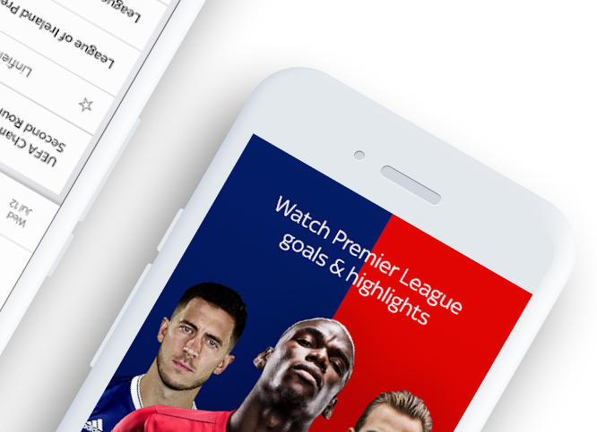
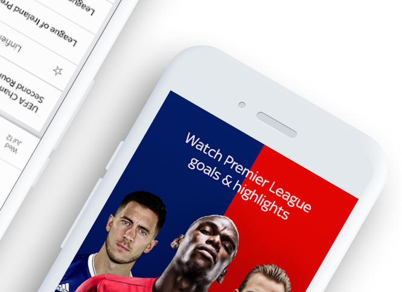

Sat, 12:35pm
Arsenal v Chelsea
Friendly Match


An Enhanced Football Experience
The Guardian Live Scores app is your go to app for live scores and watching Premier League goals… Get in there, what a result!
As well as videos of all the goals, you can watch match highlights, check out the latest scores and results and stay bang-up-to-date with the big football stories from The Guardian publication.
User-friendly Interface
The in-game goal clips from every Premier League match are available to Guardian TV customers with a Guardian subscription.
So, if you’re not a subscriber, now’s the time to make that savvy call. If that’s a step too far for you, you can still watch loads of firecracker Premier League action as long as you sign in with a free Guardian iD.
Features That Will Tailor Your Experience


We have been featured in


 
Get Up Close With Your Team
If you’re interested in the scores of more than one team (it’s OK, we won’t tell your mates you support two clubs!), you can choose the scores and competitions that matter to you using the ‘My Scores’ section. So, make sure you’re a top-flight football fan by downloading the Football Score Centre now. It’s got all this: